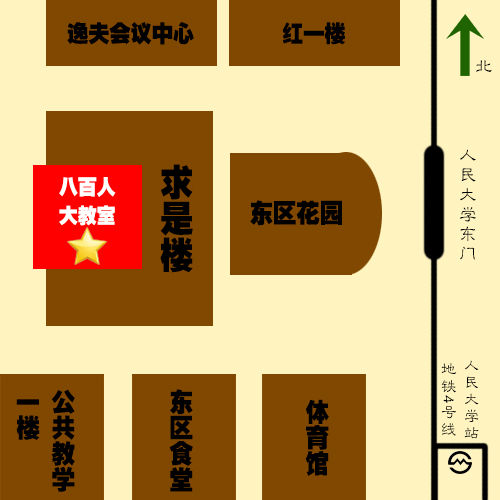

少年演说家潜能开发营闭营典礼
时间：2015年7月20日上午9:00
地点：中国人民大学八百人大教室
具体地点：北京市海淀区中关村大街59号
乘车路线
北京站：乘坐地铁2号线（崇文门方向），在西直门站换乘地铁4号线（安和桥北方向），到人民大学站（A1口出），往北步行376米到达人民大学东门。
北京西站：乘坐地铁9号线（国家图书馆方向），在国家图书馆站换乘地铁4号线到达人民大学站（A1出口）。
北京首都国际机场：T2航站楼（入口进）乘坐机场线到达三元桥站，在三元桥站换乘地铁10号线（太阳宫方向）到达海淀黄庄换乘地铁4号线，到人民大学站（A1口出）。
校内路线
